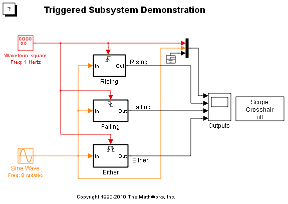
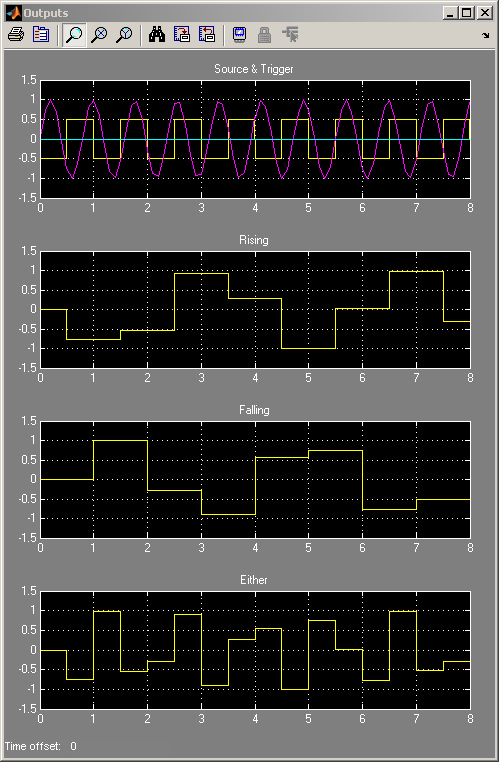

Triggered サブシステム
このデモでは、Triggered サブシステムの概念とさまざまなトリガー タイプを示します。Triggered サブシステムは、トリガー端子が特定の方向で偽から真に遷移するたびに 1 タイム ステップ間のみ実行されます。このようなトリガー端子の遷移は、遷移の方向が立ち上がり、立ち下がり、またはその両方である場合に生じます。
立ち上がり遷移は、トリガー信号遷移がゼロ以下から正の値に遷移するときに発生します。立ち下がり遷移は、トリガー信号遷移がゼロ以上から負の値に遷移するときに発生します。
シミュレーションの実行後、スコープ内の 1 番上のプロットをよく見てください。このプロットには、正弦波、波形、およびゼロのグラウンド値が表示されています。波形がゼロを通過して遷移すると、各サブシステムが適切にトリガーされます。各サブシステムの出力は、その時点の正弦波の現在値に等しくなります。
スコープ クロスヘアをオンにすると、正確な確認ができるようになります。オンにするには、Scope Crosshair というブロックをダブルクリックします。これにより、スコープでクロスヘアが有効になり、マウスを動かして、プロット全体における対応する値を整列させることができます。
 